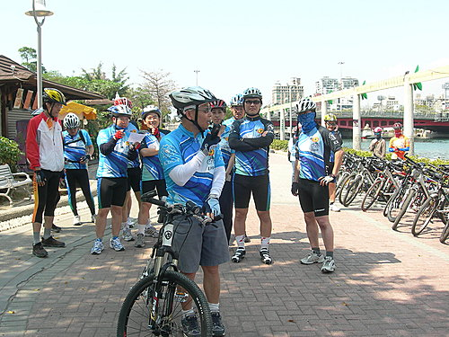
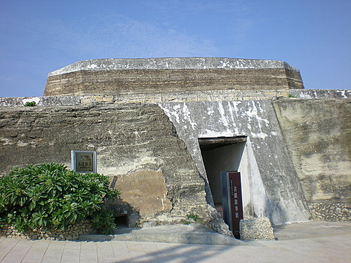
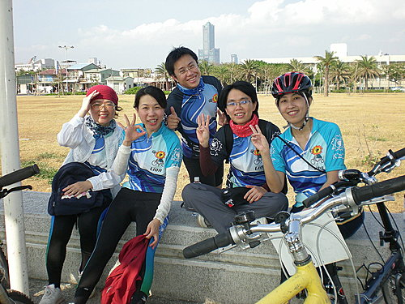

2008.3.18旗津自行車道大會師
初春高雄的午後已經艷陽高照，不過熾熱的陽光仍然退不去河東獅車友出遊的興緻，眾車友所期待的河東獅大會師即將在今日開始。
經過小施、精神領袖、小超、小揚不辭辛勞的規劃、探勘，安排本日的行程為旗津自行車道。
這是高雄市特有兼具人文古蹟及海岸自然景觀的車道，時間預計下午13:30自河東獅總部對面愛河露天咖啡廳出發，沿河西路自行車道，行經漁人碼頭、至鼓山渡輪站、進入旗津海水浴場、星光隧道、旗津砲台、風車公園、高字塔等，至下午5:30返回總部，一次流覽旗津的精華景點，忙裡偷閒享受半日的輕鬆。
為了展現向心力，大夥暫時放下手邊的工作，穿上專屬車衣，牽出愛車，共計30餘部，準時地集合於愛河西側的陽光愛河露天咖啡廳咖啡前廣場。
車友陸續集合
三巨頭行前精神講話 

眾車友熱情參與，聲勢浩大
出發前合影

浩浩蕩蕩出發了 

鼓山輪渡站到了
開心坐渡輪 
蒙面女俠 
旗津到了
本車隊首席座駕在星空隧道前
還有隊長
旗後砲台入口
我也來一張

旗后山景觀步道

獨行客-前面的人咧
那個帥哥的背影？
是我啦
旗津海水浴場
海岸公園
風車公園前小憩，還有點心

大合照

往高字塔

一馬當先，到了高字塔
高字塔前合照
回程時在海水浴場補個照
三鐵健將，沖個涼 ，誰能呷我比

本日行程到下午5:00圓滿落幕，大夥享受微風吹拂，踩著夕陽餘暉，心滿意足地返回工作崗位。感謝小施隊長、小超社長、精神領袖、小揚、阿祥、小柏對於本次活動的行程規劃、現場探勘、租車保險、準備點心、收送報名表單等付出辛勞，也感謝各位車友熱情參與，更期待下次的相聚。